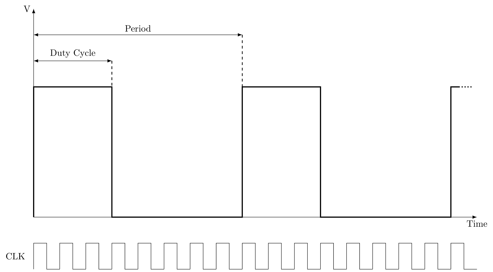

Control PWM en Linux¶
En esta práctica vamos a estudiar cómo podemos utilizar los controladores PWM desde un programa de usuario en Linux.
Señales PWM¶
Las señales de modulación de ancho de pulso (Pulse Width Modulation, PWM) se describen en la siguiente figura:

Se trata de una señal rectangular de un periodo fijo, en la que la fracción del periodo en que la señal toma un valor distinto de cero se define como duty cycle. Sin embargo, muchos interfaces de control PWM toman el duty cycle como el tiempo absoluto en que la señal está activa, que debe ser menor que la duración (absoluta) del periodo. Este tipo de señales se utilizan frecuentemente para el control de servos y la conversión digital analógica (en ausencia de DAC).
Interfaz sysfs¶
En la raspberry pi hay dos controladores pwm hardware, con la misma señal de reloj (19.2 MHz). Aunque puede obtenerse su salida por varios pines distintos, para la placa de expansión BEE es conveniente usar para el pwm0 el pin 18 o el pin 12 y para el pwm1 el pin 13. Los dos controladores son usados por el sistema de audio.
El driver de pwm ofrece actualmente un interfaz a través del sistema virtual de ficheros sysfs. Debe ser habilitado cargando el overlay pwm-2chan. Esto puede hacerse de dos formas:
- Dinámicamente con:
- En arranque, si añadimos al fichero \texttt{config.txt} la línea:
Una vez habilitado nos aparecerá el directorio /sys/class/pwm/pwmchip0 con los
siguientes ficheros: device, export, npwm, power, subsystem, uevent y unexport.
Para poder usar los canales pwm primero hay que exportarlos escribiendo el número del canal a usar en el fichero export:
Una vez exportados nos aparecerán dos nuevos directorios: pwm0 y pwm1, con los siguientes ficheros: capture, duty_cycle, enable, period, polarity, power y uevent. El sistema genera un evento udev cuando aparecen y hay que esperar este evento para poder continuar (ver ejemplo).
Una vez que se dispare el evento podemos usar un canal. Para ello debemos seguir el siguiente procedimiento:
- Escribir el periodo en ns en el fichero period
- Escribir el duty cycle en ns en el fichero duty_cycle
- Escribir un 1 en el fichero enable
Podemos cambiar dinámicamente el periodo y/o el duty cycle o apagar un canal escribiendo un 0 en el fichero enable. Cuando queramos dejar de usar un canal deberemos escribir su número en el fichero unexport.
Como ejemplo, el script bash servo_cont_rot.sh ofrece un interfaz de línea de comandos para el control de un servo de rotación continual de parallax. Si se dispone de uno de estos servos, se puede probar conectándolo a los pines indicados arriba. Podemos ejecutar el script sin parámetros o con -h para ver la lista de opciones.
El programa servo_control.c es un ejemplo de como controlar el mismo servo de rotación continua de parallax desde un programa C. Utiliza 3 pulsadores conectados a tres pines del gpio para controlar el servo. El programa recibe como argumentos: el fichero del controlador gpio, el canal de pwm a usar y los tres pines a usar como entrada. Uno de los botones permite decrementar el duty cycle, otro incrementarlo y otro parar el servo. El programa exporta el canal pwm indicado y espera a que el kernel notifique que está montado (esperando eventos de udev). Si el pwm ya está exportado da un aviso pero sigue adelante.
PWM por software¶
En lugar de utilizar controladores PWM hardware, es posible utilizar pines genéricos del GPIO para generar una señal PWM por software. Si es posible, sería mejor crear para ello una tarea de tiempo real, aunque esto queda fuera del alcance de esta práctica.
Tenemos dos alternativas:
-
Usar clock_nanosleep con el flag TIMER_ABSTIME, usando dos intervalos, uno para el periodo y otro para el duty cycle. De esta forma, se espera (clock_nanosleep) un periodo,
-
Usar timers POSIX, con un timer periódico para el periodo y uno one shot para el duty cycle, activado en cada periodo.
Probar estas alternativas se deja como ejercicio al estudiante interesado.
La limitación de esta estrategia es la precisión de la señal, que estará expuesta a la variabilidad del tiempo de respuesta del kernel (jitter). Este jitter puede llegar a medirse con un osciloscopio. Puede mejorarse utilizando un kernel de tiempo real y tareas de tiempo real.